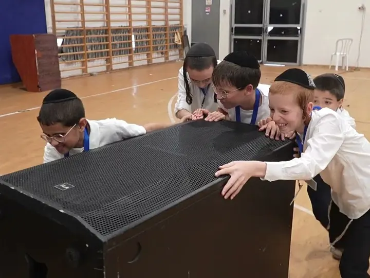
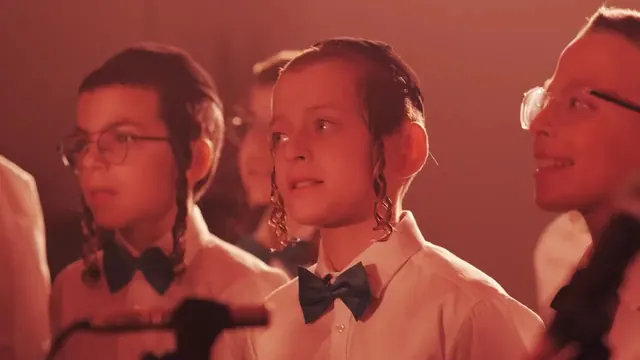
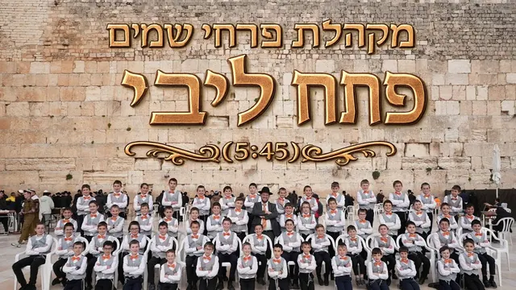
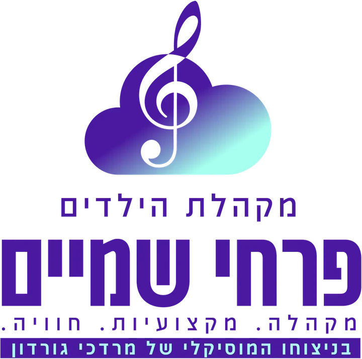

השיר החדש
אתה בחרתנו
שירת ילדי המקהלה על מילות תפילת מוסף של ראש השנה, בלחן מרדכי וישראל מאיר גורדון.

פיתוח קול מקצועי, שירה בהרמוניה והקלטות באולפן — ביחס אישי לכל ילד, בניצוחו של ר׳ מרדכי גורדון.
הצטרפות למקהלה
בחרו חוג, השאירו פרטים בדקה, וצוות המקהלה יחזור אליכם לתיאום מבדק התאמה קצר.
בן כמה הבן? בדיקה מהירה, בלי להשאיר פרטים
גילאי 8–12 · קבלה במבדק התאמהימים ושעות נשלחים אליכם במייל
ירושלים
רישום רשמי: בתיאום עם צוות המקהלה
ירושלים
רישום רשמי: מינהל קהילתי נווה יעקב
בית שמש
רישום רשמי: מתנ״ס גוונים
בית שמש
רישום רשמי: מרכז קהילתי דורות
מודעת חוגי ירושלים: עברית · English
למה פרחי שמיים
כל ילד מקבל הקשבה, הכוונה ומקום משלו בתוך המקהלה — ויוצא עם ביטחון בכישרון שלו.
עבודה קולית שיטתית בשיטתו של משה בערק: נשימה, טכניקה וביטחון בשירה.
כתיבה והלחנה, הקלטות מקצועיות באולפן, ובכל שנה קליפ או הופעה — לפי התוכנית של הקבוצה.
המקהלה מטפחת את הכישרון לצד הלימוד בחיידר, והשירים יוצאים לחזק את כולם בעבודת הבורא.
מה לומדים בחוג
שנה בחוג היא מסע. כל שלב בונה את הביטחון לשלב הבא.

נשימה נכונה, טכניקה קולית ושמירה על הקול.

מקשיבים זה לזה ובונים יחד צליל אחד של מקהלה.

מכירים מושגי יסוד במוזיקה ומנסים ליצור בעצמם.

הקלטות מקצועיות של שירי המקהלה, עם הכוונה קולית צמודה.

את פרי העבודה רואים בקליפ מקצועי או בהופעה — לפי התוכנית של אותה שנה.
השירים שלנו
קליפים, הופעות ומחרוזות מהערוץ הרשמי. שיר חדש שעולה לפלייליסט מופיע כאן אוטומטית.
השיר החדש
שירת ילדי המקהלה על מילות תפילת מוסף של ראש השנה, בלחן מרדכי וישראל מאיר גורדון.
על הבמה
ההופעה הבאה
ההופעה הבאה תפורסם כאן, עם המודעה, המקום והשעה.
ספרו לנו על האירוע במייל, ונחזור אליכם עם הצעה.

לקהילות, למתנ״סים ולעיריות
מופע שבו הקהל הופך לחלק מהמקהלה. המקהלה והמנצח מלמדים את הקהל את התפקידים, ובסוף כולם שרים יחד. חוויה קהילתית, חינוכית ומוזיקלית — שמתאימה במיוחד למתנ״סים ולאירועי קהילה.
רק באתר
מאחורי הקולות · רק באתר
תיעוד מהחזרות ומהאולפן, הסברים של ר׳ מרדכי על העבודה הקולית, וטעימות מהשיר הבא — לפני כולם, ורק כאן באתר.

רק באתרמחזרה לבמה
הקלטה מהחזרה הראשונה לצד הביצוע הסופי — לשמוע איך הקולות נבנים לאורך העבודה.
יעלה מחומרי המקהלהבאולפן
ר׳ מרדכי מסביר איך כל קבוצה לומדת את התפקיד שלה, ואיך הכול מתחבר לצליל אחד.
יעלה מחומרי המקהלה
רק באתריומן הפקה
רגעים מהצילומים, וההחלטות שמאחורי כל סצנה — מספרים הילדים והצוות.
יעלה מחומרי המקהלהבהדגמה המקום מוכן לתכנים. מרדכי מוסיף אותם מלוח הניהול, מסמן ״בלעדי לאתר״, והם מופיעים כאן בלבד.

בואו להכירנו מקרוב
פרחי שמיים היא מקהלת ילדים וחוג מוזיקלי שפועל בירושלים ובבית שמש. המטרה שלנו: לעודד ילדים מוזיקליים, לתת להם הרגשה טובה ולנסוך בהם ביטחון בכישרון שהקב״ה חנן אותם — כך שיתחזקו גם בלימודם בחיידר, ולא להפך.
המקהלה מוציאה שירים וקליפים ומופיעה מעת לעת, והשירים יוצאים כדי שכולם יוכלו ליהנות ולהתחזק מהם בעבודת הבורא.
ר׳ מרדכי גורדוןמנצח המקהלה, מלחין ומעבד קולי
המנצח, המורים והמלווים — עם תמונות ותפקידים.
יושלם מחומרי המקהלהחינוך, ביטחון עצמי והתקדמות ברוחניות דרך המוזיקה.
יושלם מחומרי המקהלההופעות, מקהלולם ושיתופי פעולה לקהילה.
יושלם מחומרי המקהלהכאן יוצגו המלצות של הורים, גם בסרטון, באישור המשפחות.
יושלם מחומרי המקהלהשאלות נפוצות
החוגים מיועדים לבנים בגילאי 8–12. אפשר לבדוק בשנייה בבדיקת הגיל שבאזור החוגים, והגיל ימולא בטופס.
בירושלים: ברמת אשכול ובנווה יעקב (במינהל הקהילתי נווה יעקב). בבית שמש: ברמה א׳ (מתנ״ס גוונים) וברמה ד׳ (מרכז קהילתי דורות).
משאירים פרטים באתר, וצוות המקהלה חוזר אליכם לתיאום מבדק התאמה קצר. אחרי המבדק מקבלים הנחיות לרישום הרשמי.
הימים והשעות של כל חוג נשלחים אליכם במייל, אחרי שמשאירים פרטים.
פיתוח קול מקצועי, שירה בהרמוניה והקלטות באולפן — ביחס אישי לכל ילד, בניצוחו של ר׳ מרדכי גורדון.
כן. כתבו לנו במייל על האירוע ונחזור אליכם עם הצעה. לקהילות, למתנ״סים ולעיריות יש גם את מקהלולם — מופע שבו הקהל לומד את התפקידים ושר יחד עם המקהלה.
כל השירים, הקליפים, המחרוזות וההופעות נמצאים באתר בעמוד השירים, וגם בערוץ הסרטונים של המקהלה.
לא נמצאו שירים. נסו מילה אחרת.
אם הנגן לא נטען אצלכם, אפשר לפתוח את השיר בחלון חדש.